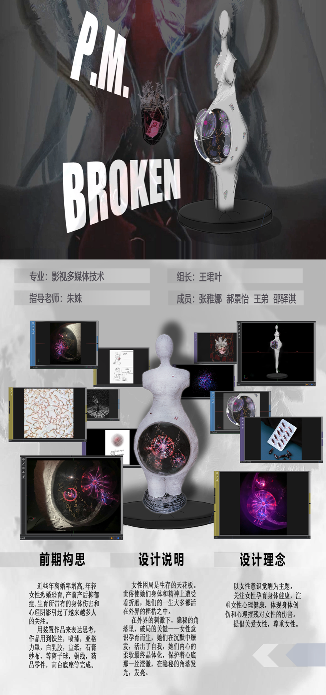
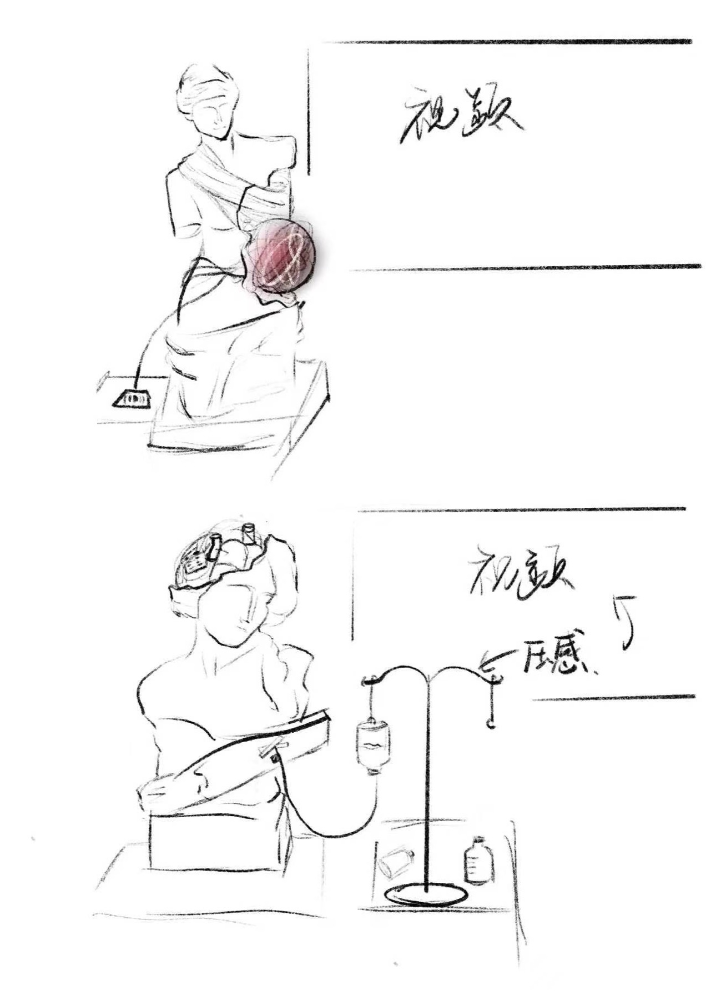
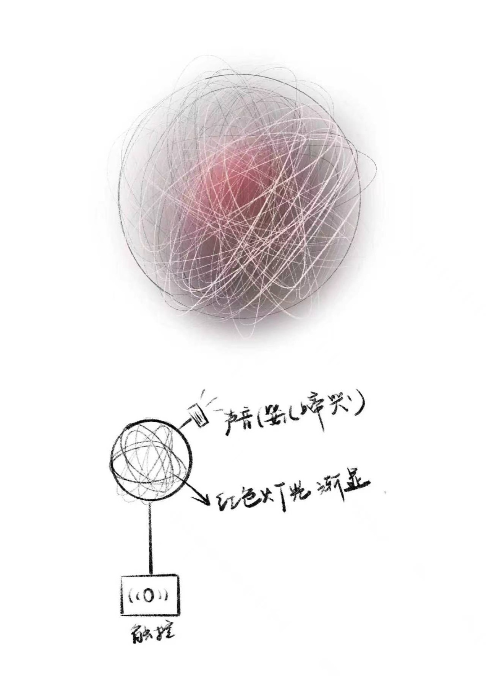
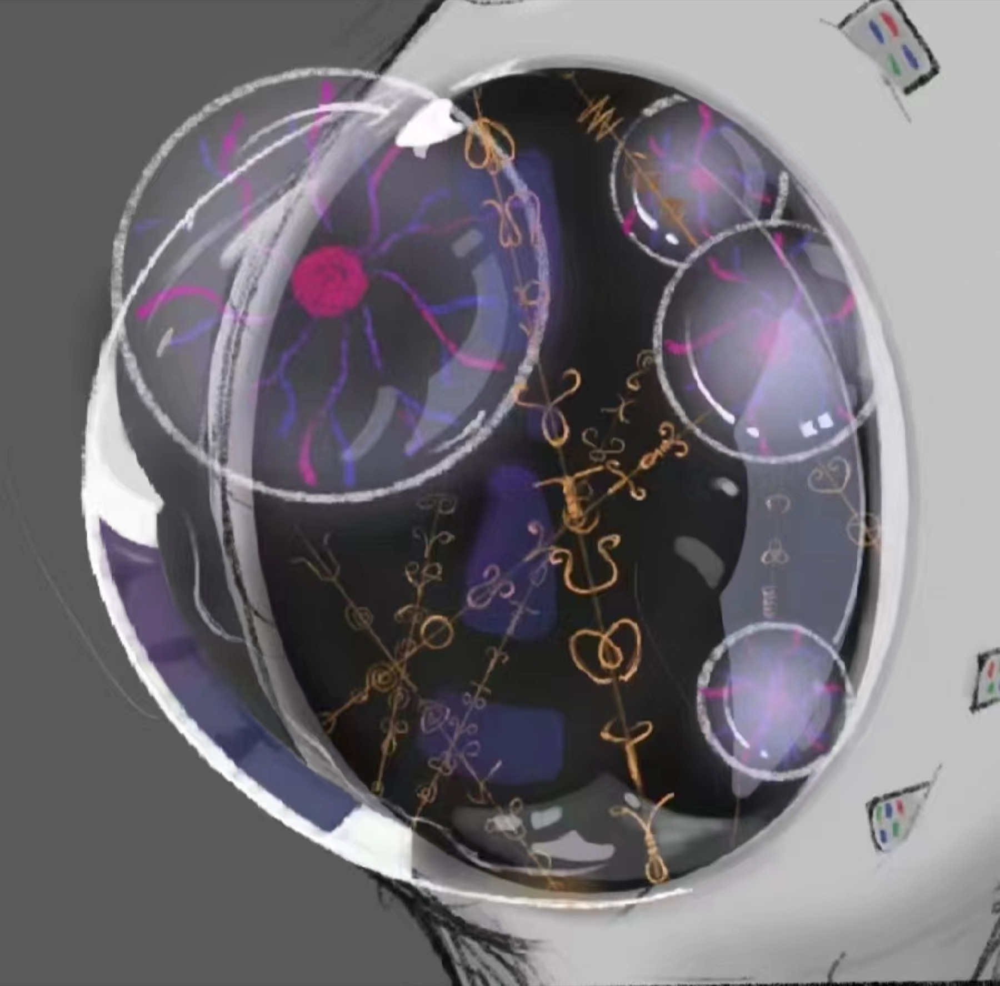
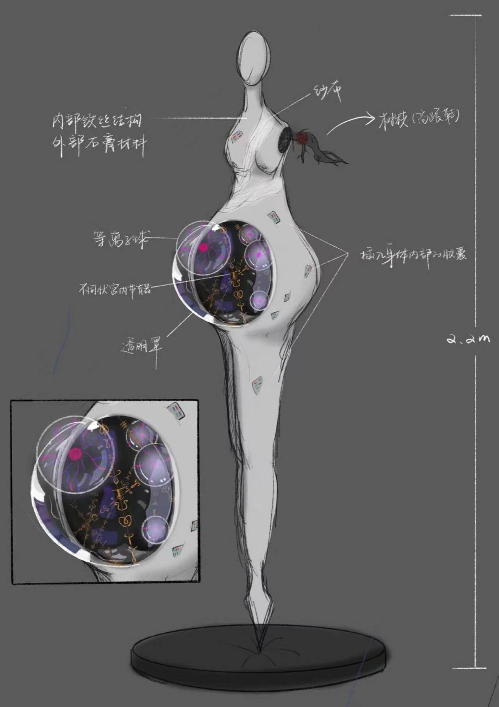
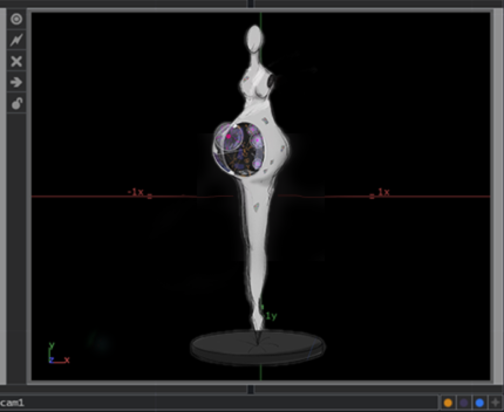
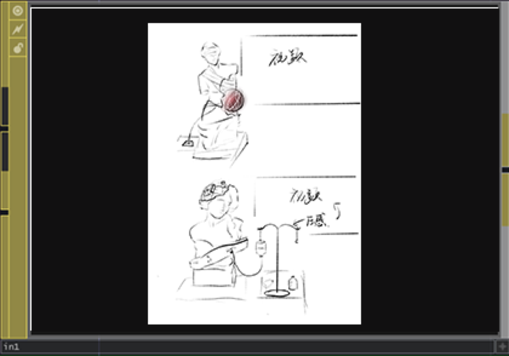
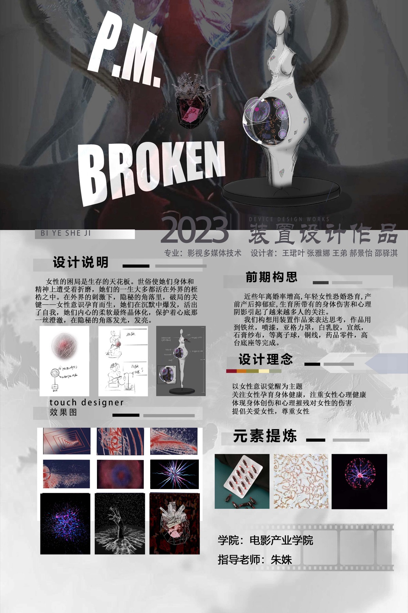
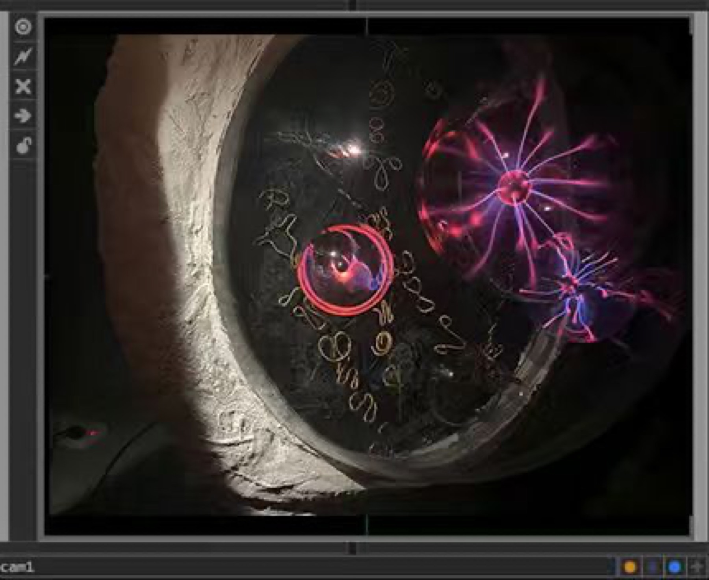

INSTALLATION ART · GRADUATION PROJECT
《P.M.Broken》

项目与职责
团队四人完成的装置艺术毕业作品。本人参与主题概念、空间表达与材料呈现讨论，负责最终海报的信息层级、图像组合和视觉输出，并参与材料处理、装置组装及现场呈现。
从概念到成品
详情页按照“前期素材—设计草稿—视觉方案—装置制作—最终呈现”的顺序保留过程资料，使项目不只展示结果，也呈现创意逐步落地的工作过程。








